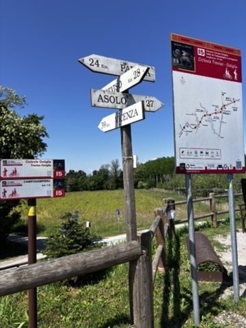
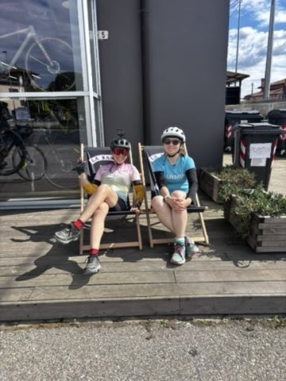
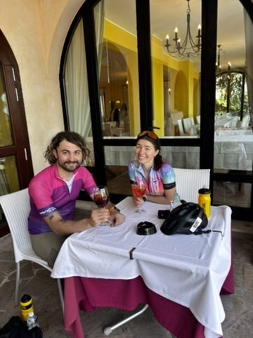
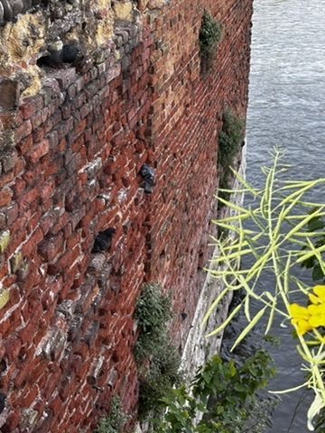
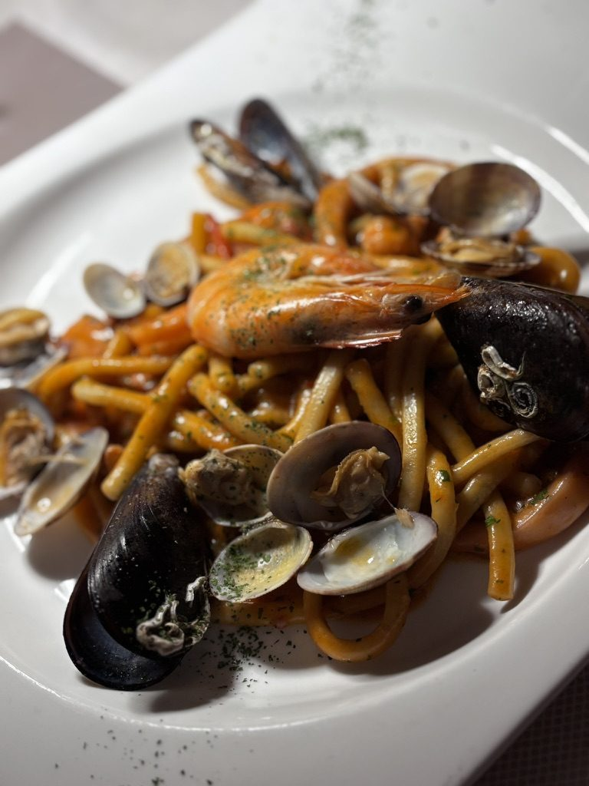
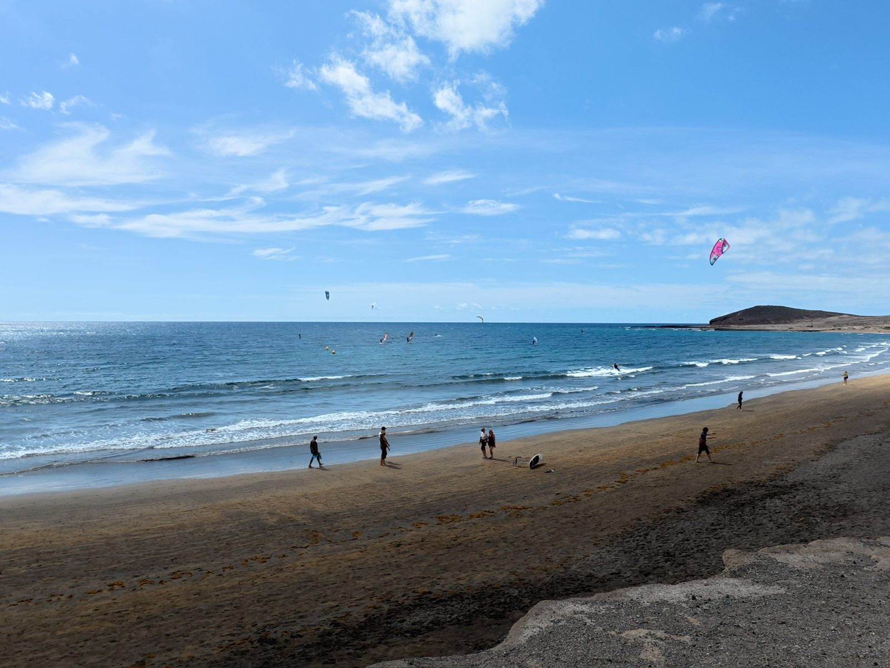

One of the side effects of staying somewhere long enough to actually know it is that by the time you leave, you have a list of things you didn't get to. Not because you were lazy — you were not lazy — but because the place kept generating options faster than you could act on them. Tenerife did this consistently.

All good directions. I need a clone. This is the correct response to Tenerife.
I stood at a junction on one of the last mornings and genuinely could not decide. Every direction was the right one. The coast to the left, the forest road ahead, the viewpoint sign pointing uphill to the right. This is the problem with a place that works: it gives you too many good options and not enough days.
I went uphill. That's almost always the right call.
The adventure buddy

The adventure buddy. Essential travel infrastructure.
Solo travel is not actually solo most of the time. It's solo in the sense that you make all your own decisions — where to go, when to leave, what to skip. But the people you pick up along the way are a constant. Every trip produces at least one adventure buddy: the person who shows up at the right moment and is up for the same things you are. Mine appeared mid-trip and improved the second half significantly.
Aperol with a nomad

Aperol break with another nomad. This meeting took four minutes to arrange and two hours to leave.
Remote workers abroad find each other like magnets find metal. You're in a café, someone has a laptop, they're not on a tourist schedule, they're moving at the same unhurried-but-purposeful pace you are. You make eye contact, one of you says something, and twenty minutes later you're sharing Aperol and comparing cities and talking about the logistics of healthcare across borders and whether Lisbon is still worth it. These conversations always go longer than expected. I've stopped being surprised by this.
The pigeon

Brave pigeon. This bird has more confidence than most people I've met. Respect.
I don't normally photograph pigeons. This one was different. It had claimed an unreasonably good spot — prime seafront real estate, full sun, directly in the path of foot traffic — and was completely, utterly unbothered by any of it. Nobody was moving it. It knew this. I appreciated the energy. I took the photo and moved on, slightly motivated.
The race

Best meal ever, eaten before the ride. The carb load was not optional.
From Tenerife I went straight to a cycling race in the Veneto. This is a normal sentence in my life. The race involved several hours in the saddle, a route through terrain that looked beautiful from the start line and considerably more demanding once you were in it, and conditions that deteriorated in the way cycling race conditions always do when you're several hours from the finish.
The pre-race meal was exceptional. I want to be clear about that. Whatever happened after, the meal was correct.

Five hours of biking. I cannot describe the level of mud. The photo almost describes it. Almost.
After five hours the mud situation was beyond language. I will not attempt to describe it in detail except to say that it was comprehensive — mud as a full-body experience, mud as a philosophical state. I finished. That is the relevant information.
Recovery: Caorle

Caorle, the day after the race. The sea, the sun, absolutely nothing required of me. Perfect.
The day after the race I went to the beach in Caorle — a small fishing town on the Adriatic coast of Veneto, with coloured houses, a round cathedral, and a long sandy beach that asks nothing of you except to be horizontal on it. I lay there for the better part of a day. My legs had opinions. I ignored them.
Caorle is the kind of place that Italians know about and tourists have not yet fully discovered, which means it still runs on its own schedule. Good fish. Good coffee. Nobody in a rush. After a race day with five hours of mud, it was exactly right.
The next adventure was already loading in the background. But first: the beach, the sun, a coffee, and the knowledge that the mud had been worth it.